開催概要
| 日時 | 11月22日(日) 10:00〜12:00（開催済み） |
|---|---|
| 場所 | 都南老人福祉センター |
| 内容 | 野山で採れる身近な素材を使って、ナチュラルな風合いのリースやスワッグを作りました。作品はお持ち帰りいただきました。 |
| 対象 | 岩手県内在住の方 |
| 定員 | 10人（抽選） |
| 費用 | 1,000円（材料費等） |
| 問い合わせ | 都南つどいの森 019-637-0877 |
※ このワークショップは終了しています。ご参加のみなさま、お疲れさまでした。なお、11月29日(日)には「その2」を開催します。
当日の様子
会場の床いっぱいにブルーシートを広げ、針葉樹の枝、赤やオレンジの実のついた枝、松ぼっくりや木の実、小さな乾燥素材などを並べました。参加者は、お手本の写真を見ながら好きな素材を選び、つるの輪や束ねた枝に留めていきました。
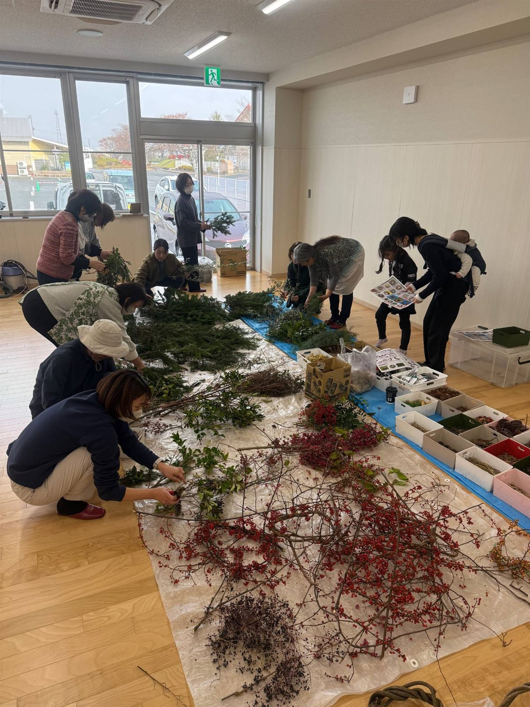
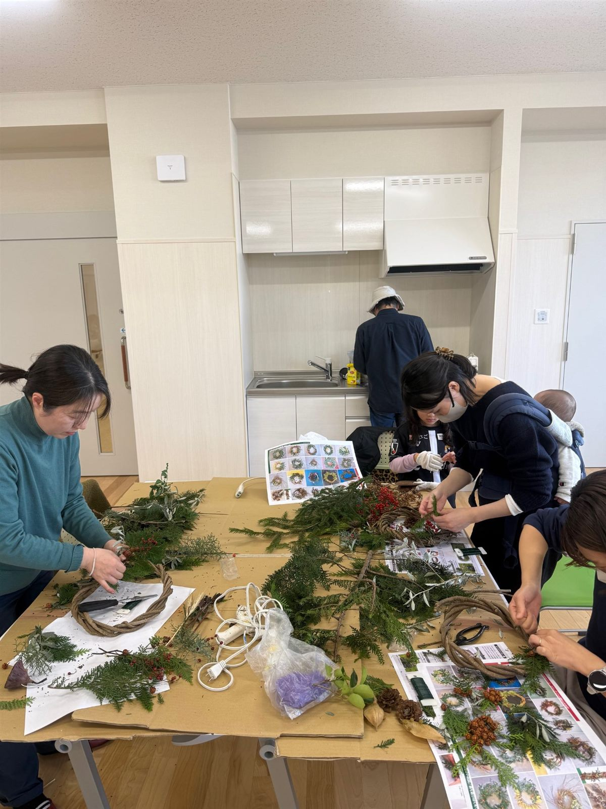
できあがったリース
つるを編んだ輪に、素材をどこに、どれだけ重ねるかで、印象は大きく変わります。全体を覆った作品、輪の下半分だけに寄せた作品、輪そのものを見せた作品など、さまざまなリースができました。写真をクリックすると大きく表示されます。
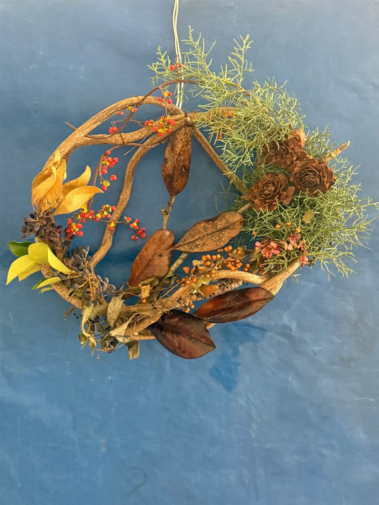
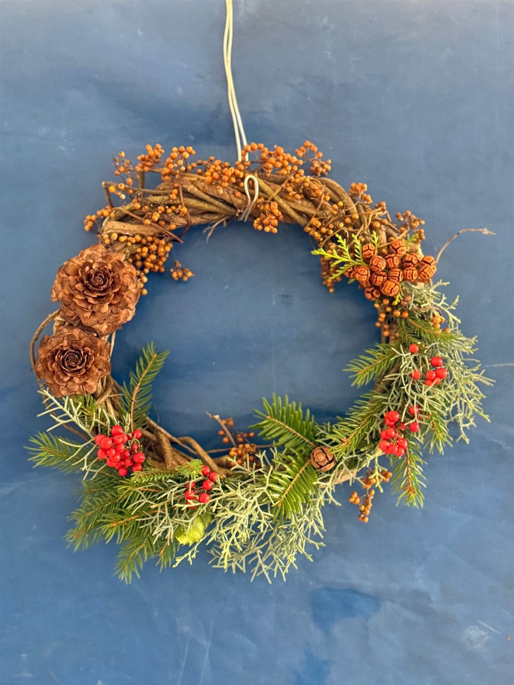
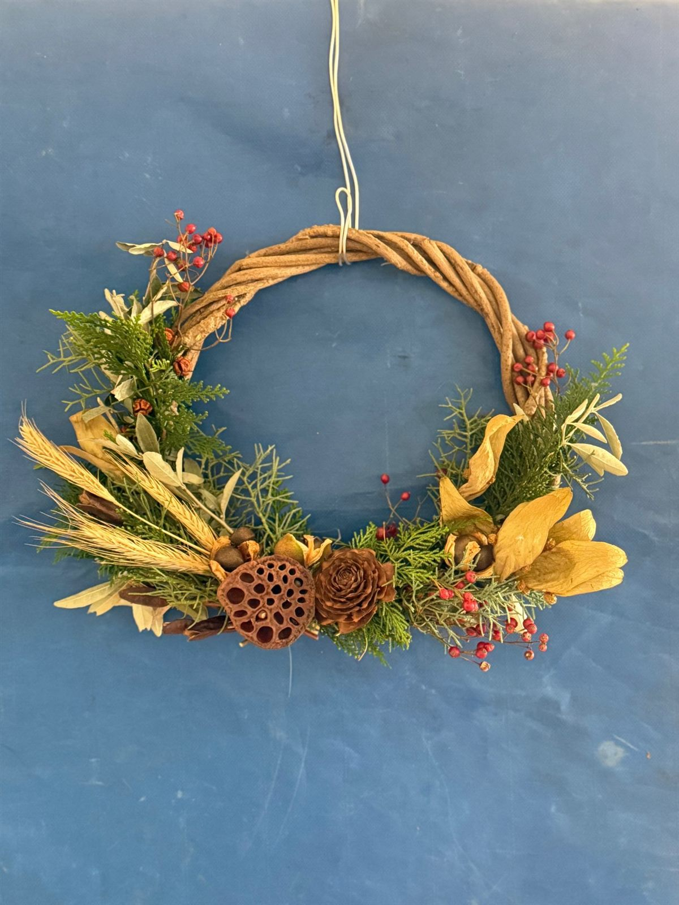
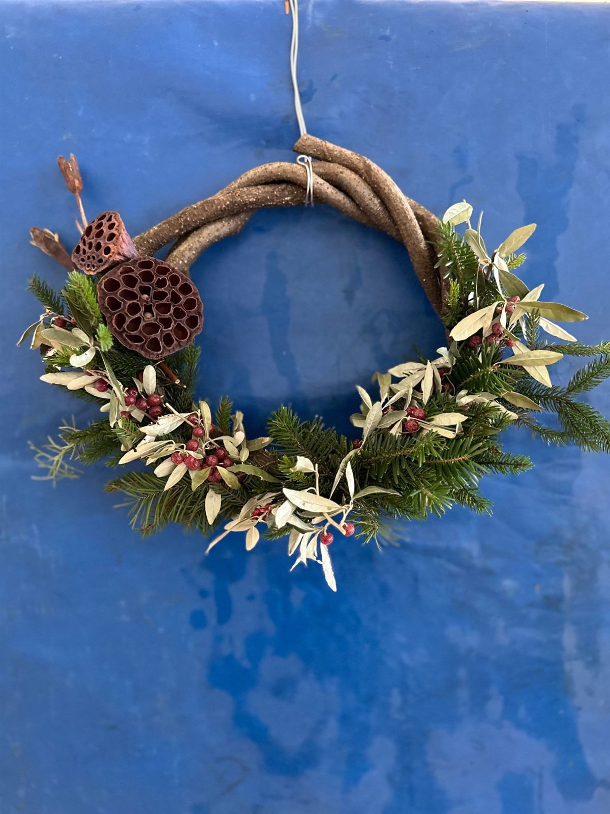
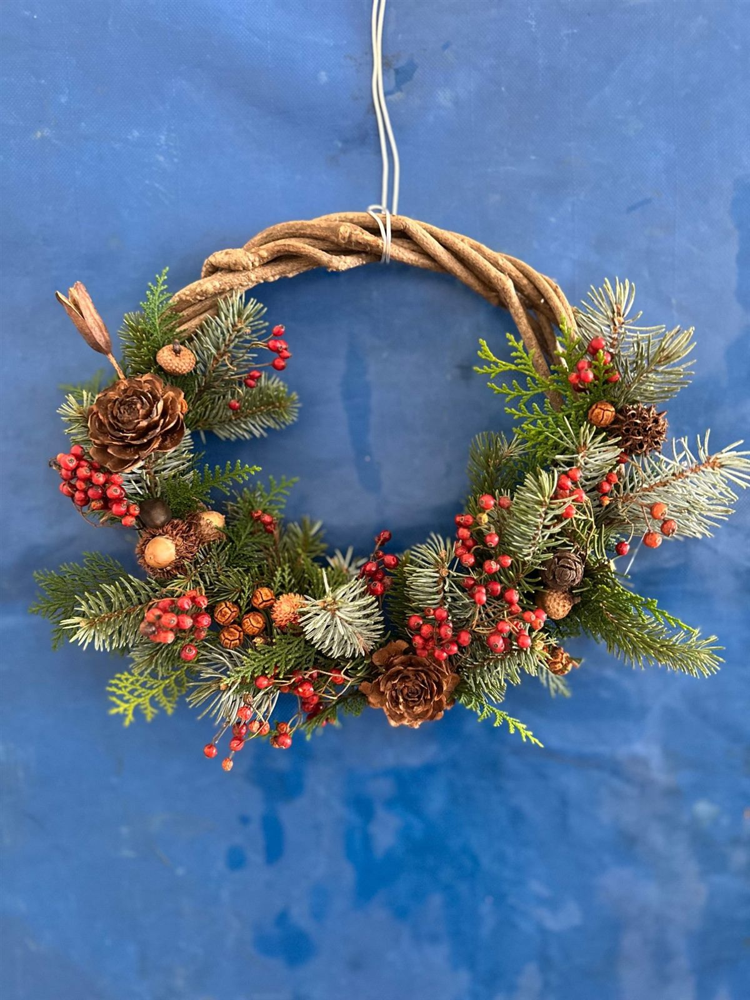
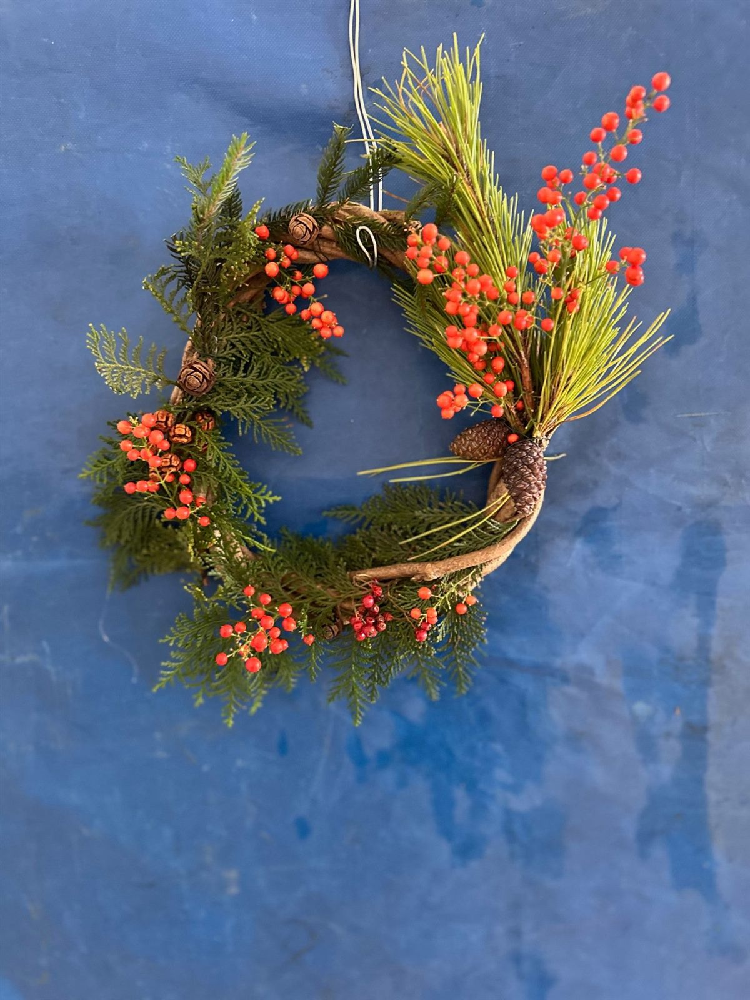
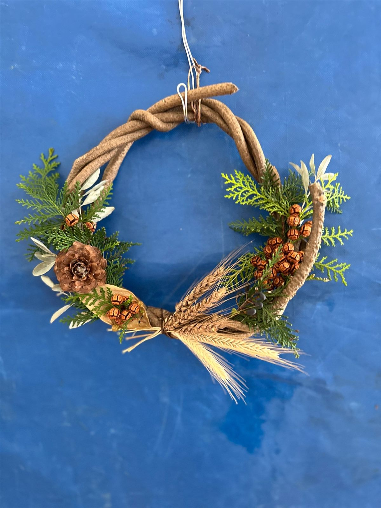
できあがったスワッグ
スワッグは、枝や葉を束ねて壁に掛ける飾りです。上でひとつに束ね、下へ向かって素材が垂れるように重ねていきます。
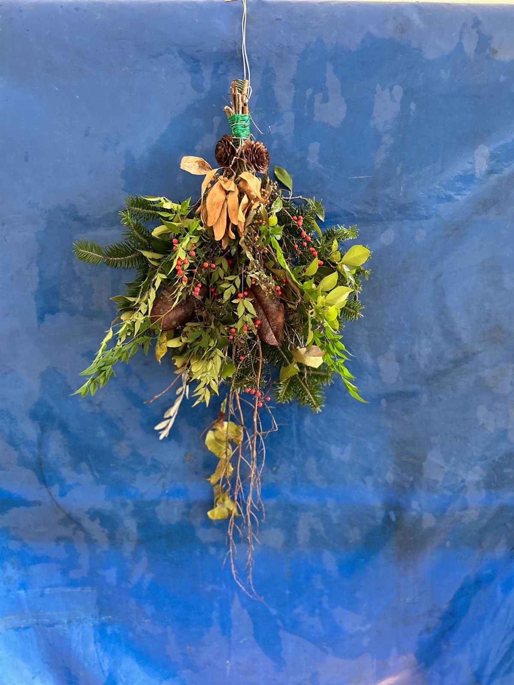
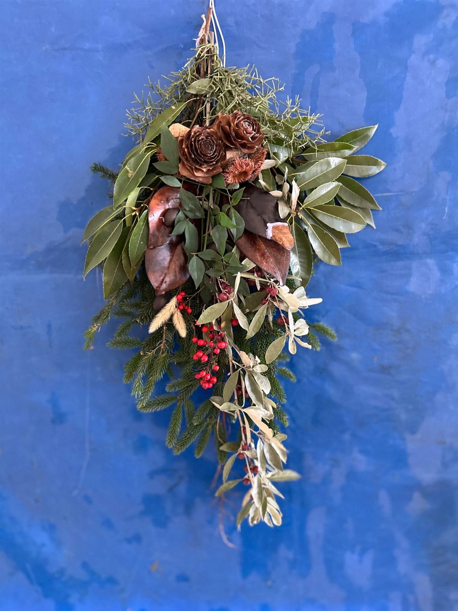